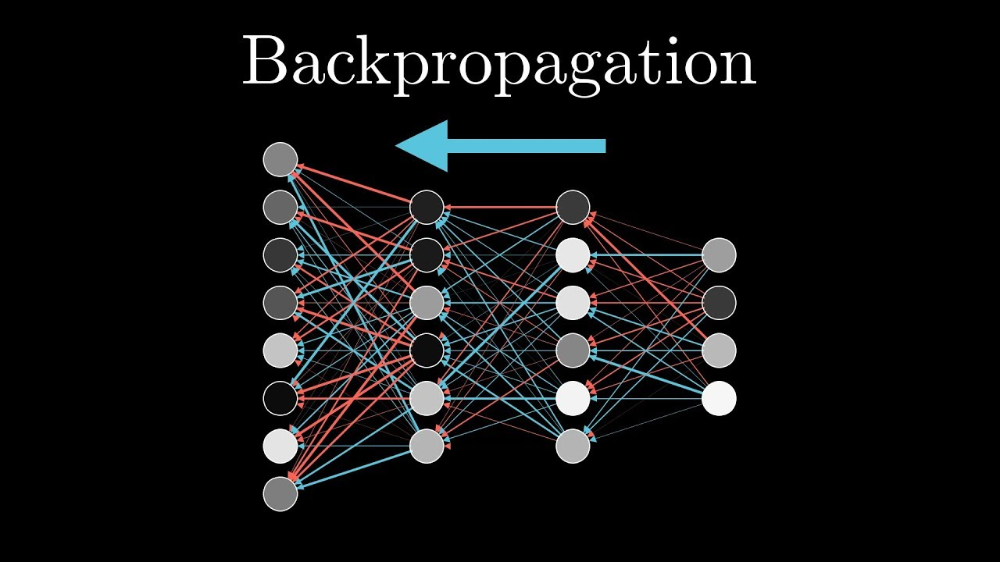

Backpropagation is a fundamental algorithm used to train artificial neural networks by adjusting weights based on the error between predicted and actual outputs. It works by propagating errors backward through the network using a method called gradient descent. This iterative process minimizes the loss function, allowing the network to learn complex patterns in data. The key advantage of backpropagation is its ability to fine-tune weights in multi-layer networks, making deep learning models highly effective. Without backpropagation, training deep networks would be inefficient, as manual weight adjustments would be impractical for complex problems like image recognition and natural language processing.
Backpropagation operates in two main phases: forward propagation and backward propagation. In the forward pass, the input data flows through the network, layer by layer, until a final prediction is made. The loss function then computes the difference between the predicted and actual values. In the backward pass, the algorithm calculates gradients of the loss function with respect to each weight using the chain rule of calculus. These gradients are then used to update the weights in the opposite direction of the error, reducing it over time. This process is repeated for many iterations until the network converges to an optimal solution.
Backpropagation has revolutionized machine learning, enabling the development of deep neural networks that power applications like self-driving cars and speech recognition. However, it also has challenges, such as the vanishing gradient problem, where gradients become too small in deeper layers, slowing down learning. Various optimization techniques, including momentum, Adam, and batch normalization, have been introduced to mitigate these issues. Despite its limitations, backpropagation remains the backbone of modern AI, continuously evolving with new advancements in neural network architectures and training methodologies. Its efficiency makes it indispensable for training deep learning models in real-world applications.